Then Senior / GründergenerationNow Aktuelle GenerationThen & Now Beide Perspektiven
Ablauf
17:30 – 18:30
Ankommen, Aperitif & Vorspeisen
Bilder-Loop läuft (Reel 1) · Rotaract-Band spielt Background · Fingerfood
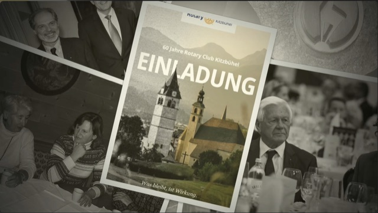
📊 FolieReel 1 – Dauerschleife: 120–150 Bilder aus 60 Jahren RC Kitzbühel im Loop
18:30 – 18:35
Musikalisches Opening & Opening Reel
Junko Philipp – Klavier (Rotary Fanfare) · Einspieler „60 Präsidenten in 60 Sekunden" (Benetton-Stil)
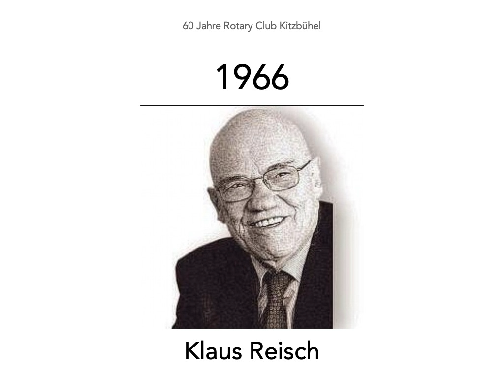
📊 FolieReel 2: „60 Präsidenten in 60 Sekunden" (Benetton-Stil) – Keynote-Präsentation, wird separat eingespielt. Startfolie: 1966 Klaus Reisch.
🎙️ Ansage aus dem Off (Christoph)„Liebe Freundinnen und Freunde, herzlich willkommen zu 60 Jahren Rotary Club Kitzbühel. Bitte nehmt Platz. Es geht gleich los."
Ablauf im Block: Ansage → Fanfare (Junko) → Reel. Reel läuft direkt nach der Fanfare, ohne Wort dazwischen.
18:35 – 18:43
Begrüßung & Grußworte – kombiniert (Club für Club)
Hedy Bendler auf der Bühne stellt jeden Club einzeln vor · Christoph mit Mikro & Kameramann geht hin · ca. 8 Min.
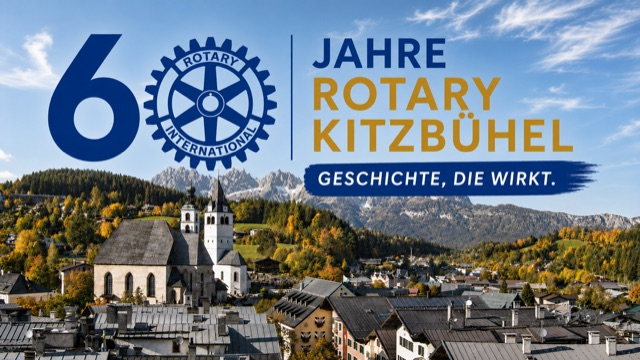
📊 FolieFolie: Logo RC Kitzbühel + 60-Jahre-Jubiläumslogo „Geschichte, die wirkt."
🎙️ Anmoderation aus dem Off (Christoph)„Bitte begrüßt unsere Präsidentin – Hedy Bendler."
🎙️ Hedy – Eröffnung der Begrüßungsrunde„Liebe Freundinnen und Freunde, liebe rotarische Familie, ich freue mich von Herzen, Euch heute Abend hier im Rasmushof zu unserer 60-Jahr-Feier zu begrüßen. Ich darf Euch jetzt unsere rotarische Familie vorstellen – Mutterclub, unsere Patenkinder, und unsere Freunde. Christoph hält das Mikro für ein kurzes Grußwort zu euch."
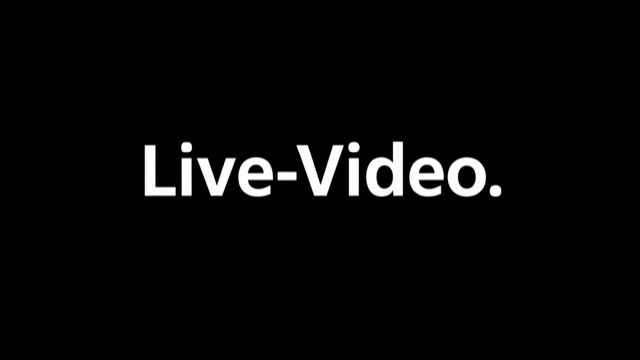
📊 FolieLive-Video – Leinwand schaltet auf das Live-Kamerabild, sobald Christoph mit Mikro & Kameramann zum Club-Präsidenten geht. 🎥 Bildausschnitt: eine Person stehend (Präsident:in / Ehrengast am Tisch) + Christoph mit Mikro daneben.
1️⃣ Prominente / Ehrengäste aus Stadt & RegionHedy: „Wir freuen uns sehr über zwei besondere Gäste aus Kitzbühel:
• Hedwig Haidacher in Vertretung der Stadt Kitzbühel
• Vertretung des Pflegeheims – Name TODO"
Namentliche Erwähnung mit kurzem Applaus – kein Grußwort.
📋 TODO: konkrete Person der Pflegeheim-Vertretung ergänzen.
2️⃣ Mutterclub – RC Kufstein (geht los)Hedy: „Wir beginnen mit unserem Mutterclub – dem RC Kufstein, der uns 1966 gegründet hat. Ich begrüße den/die Präsident:in Name TODO."
Christoph → Grußwort RC Kufstein.
3️⃣ Unsere Patenkinder – RC Zell am See, RC Wörgl-Brixental, Rotaract KitzbühelHedy: „Und mit Stolz: Wir selbst haben drei Clubs ins Leben gerufen – den RC Zell am See, den RC Wörgl-Brixental und unseren Rotaract Kitzbühel. Ich begrüße der Reihe nach:"
• RC Zell am See – Name TODO · Christoph → Grußwort
• RC Wörgl-Brixental – Name TODO · Christoph → Grußwort
• Rotaract Kitzbühel – Name TODO · Christoph → Grußwort
📊 FolieFolie: Logo RC Kitzbühel + 60-Jahre-Jubiläumslogo „Geschichte, die wirkt." (kommt nach dem Rotaract-Grußwort wieder zurück)
4️⃣ Befreundete Clubs & Schwesterorganisationen (nur kurze Erwähnung, kein Grußwort)Hedy: „Außerdem begrüße ich unsere weiteren rotarischen Freunde – in alphabetischer Reihenfolge und einem gemeinsamen Applaus.
Und ich begrüße herzlich unsere befreundeten Clubs und Organisationen:
• Ladies Circle
• Lions Club
• Soroptimist Club
• Alpenverein"
Nur namentliche Erwähnung der Clubs – keine Präsident:innen, kein Grußwort, keine Kamera.
5️⃣ Hedy – Kurze Ansprache (~2 Min) + Anmoderation beider GovernorsHedys kurze Ansprache (ca. 2 Min) – Inhalt TODO Vorschlag: Blick auf 60 Jahre Wirkung des Clubs, Dank an die rotarische Familie, Bogen ins Heute. Frei zu formulieren – endet mit folgendem fixen Übergang zu den Governors:
Fixer Abschluss der Ansprache:
„… Und jetzt möchte ich noch den Incoming Governor Name TODO begrüßen und den amtierenden Governor Gustav Oberwallner. Und den darf ich bitte zu mir auf die Bühne bitten."
Beide Governors werden begrüßt – nur der amtierende Governor (Gustav) hält ein Grußwort und kommt auf die Bühne. Der Incoming Governor bleibt am Platz.
🔁 Schema pro Club (Hedy stellt vor → Christoph holt Grußwort ab)1. Hedy von der Bühne nennt Club + Bezug (Mutterclub / Patenclub / Freundesclub) + Präsident:in.
2. Christoph geht zur Person, hält das Mikro – Kameramann live, Leinwand-Einblendung.
3. Grußwort max. 45–60 Sek.
4. Kurzer Applaus, dann nächster Club.
📋 TODO Namen
Namen vor dem Abend klären und in die obigen Blöcke einsetzen:
• Präsident:innen: RC Kufstein · RC Zell am See · RC Wörgl-Brixental · Rotaract Kitzbühel · RC Saalfelden · RC Lignano
• Incoming Governor (zusätzlich zu Gustav Oberwallner)
18:43 – 18:46
Governor-Grußwort
Gustav Oberwallner – Governor Distrikt 1920 (ca. 3 Min.)
🎙️ Keine eigene AnmoderationÜbergabe erfolgt direkt aus Hedys Begrüßung im vorherigen Block.
18:46 – 18:49
Leitmotiv – „RC Kitz in 3 Sätzen"
Christoph Holz – Moderator (ca. 2–3 Min.) – jetzt erstmals selbst auf der Bühne
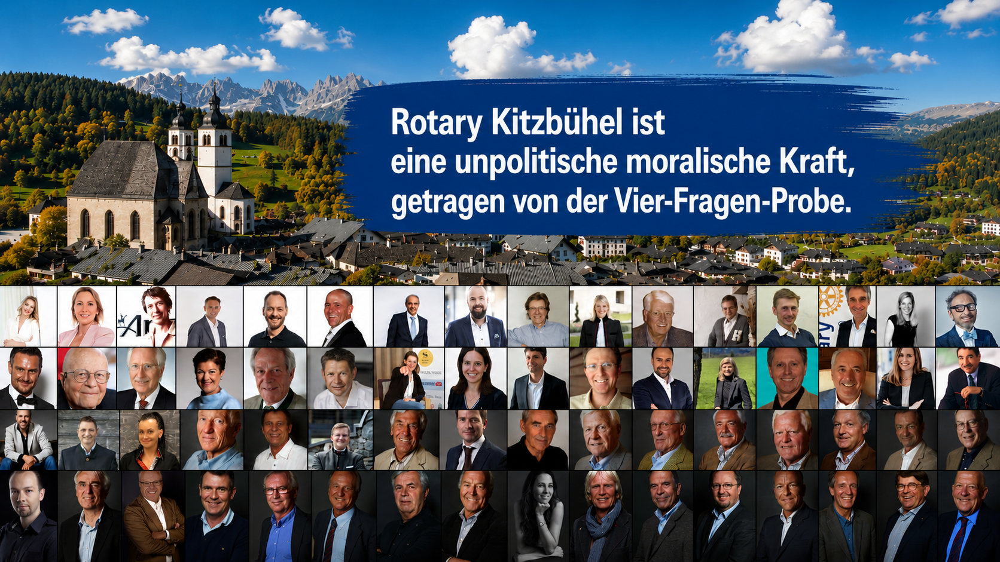
📊 Folie„Wer ist Rotary Kitzbühel" – Vier-Fragen-Probe + 60-Jahre-Motto als Eyecatcher
🎙️ Aufgang & Eröffnung (Christoph)„Vielen Dank, lieber Gustav, für diese Worte. Mein Name ist Christoph Holz – ich darf Euch heute Abend durch unser Programm begleiten. Drei Sätze zu dem Club, der uns hier zusammenführt:"
Die 3 Sätze (Hauptversion – kurz & sprechbar):
Wer wir sind. „Der Rotary Club Kitzbühel – das ist seit 1966 eine Gemeinschaft von Männern, seit 2020 auch von Frauen. Wir treffen uns jeden Donnerstag im Tiefenbrunner, unserem Clublokal. Unser Motto: Service Above Self – selbstlos dienen."
Wie wir arbeiten. „Wir messen unser Handeln an den vier Ordensregeln von Rotary: Ist es wahr? Ist es fair? Fördert es Freundschaft? Nützt es allen? Und wir übersetzen das in Projekte: Bildung. Jugendaustausch. Fundraising. Sport."
Worum es heute geht. „Heute zeigen wir Euch 60 Jahre dieser Wirkung – nicht als Bilanz, sondern als Generationen-Dialog. Then & Now. Old & Young."
Selbstdarstellung des Clubs – Christoph (kurz, frei):
„Bei uns arbeitet jeder mit. Bei Rotary finden wir Freundschaften auch noch später im Leben. Wir bekommen Einblicke in Berufsgruppen und ganz persönliche internationale Kontakte, die uns sonst unzugänglich wären. Weltweit jeder 6.700ste, in Österreich jeder 1.500ste, im Bezirk Kitzbühel jeder 1.000ste. Rotary ist kein Verein – Rotary ist ein Mindset: unpolitische moralische Kraft, getragen von der Vier-Fragen-Probe.
„Rotary ist eine weltweite Gemeinschaft positiv gleichgesinnter Menschen, die besonders aktiv und hilfsbereit sind und einander achten und vertrauen." – Herbert Broschek, Urrotarier des RCKB.
„Und nun spreche ich mit seinem Sohn."
→ Übergang zum nächsten Block (Gespräch mit Pascal)„Wie 60 Jahre dieser Geschichte gewirkt haben – das erzählt uns jetzt jemand, der den Club aus einer ganz besonderen Perspektive kennt: Pascal Broschek – Abkömmling eines Urrotariers des RCKB. Sein Vater war zwar nicht Gründungsmitglied, aber von Beginn an mit dabei. Bitte einen herzlichen Applaus."
18:49 – 19:01
Gespräch mit Pascal Broschek – „Sohn eines Urrotariers"
Pascal Broschek · Gesprächsführung: Christoph Holz · persönliche Innensicht in die Gründergeneration
📊 FolieFolie mit schwarzer Fläche – die Folie selbst zeigt eine reine schwarze Fläche, damit der Beamer effektiv ausblendet. Pascal sitzt sichtbar in der Bühnenecke – der Fokus bleibt auf ihm, kein Folienbild ablenkend dahinter.
Eröffnung – gesprochen von Christoph Holz:
„Pascal Broschek hat den Club aus einer Perspektive erlebt, die fast keiner von uns hat – als Kind eines Rotariers. Pascal, lass uns dort anfangen, wo deine Geschichte mit Rotary begonnen hat."
Pascal BroschekThen & Now– persönliche Innensicht: vom Sohn eines Urrotariers zum heutigen Rotarier
🔁 Dramaturgie: Christoph fragt – Pascal erzähltFragen-Reihenfolge (Christoph kann je nach Zeit kürzen):
Das Sakko-Bild:Pascal, wie war das, wenn dein Vater am Donnerstag das Rotary-Sakko angezogen hat – was war das für ein Moment in der Familie?
Die Kindheits-Perspektive: Was hast du als Kind verstanden von dem, was Rotary ist – und was hast du dir zusammengereimt?
Die Gespräche zu Hause: Worüber hat dein Vater geredet, wenn er vom Meeting heimkam? Erinnerst du dich an einen konkreten Satz, ein Projekt, einen Namen?
Der Umkipp-Moment: Wann hast du zum ersten Mal gespürt, dass das nicht „der Klub von Papa" ist, sondern dass dich das selbst angeht?
Die Brücke: Wenn du heute als Rotarier am Donnerstag dasitzt – siehst du deinen Vater dann manchmal in dir? Und in welchem Punkt machst du es anders?
Old & Young: Was ist heute leichter geworden im Club – und was vermisst du vielleicht von dem, was bei deinem Vater noch selbstverständlich war?
Abschluss-Frage (Wirkung): Wenn dein Vater heute hier säße und sehen würde, was 60 Jahre später geworden ist – was würdest du ihm sagen?
🎙️ Abmoderation (Christoph)„Vielen Dank Pascal – das ist ‚Then & Now' in einem Moment."
19:01 – 19:06
Musikmoment
Junko Philipp – Strauß „Unter Donner und Blitz", op. 324
📊 FolieFolie: Logo RC Kitzbühel + 60-Jahre-Jubiläumslogo „Geschichte, die wirkt." (kommt hier wieder zurück – wie bei Hedys Begrüßung und Überraschungsmoment)
🎙️ Anmoderation (Christoph) – erste Vorstellung von Junko„Und jetzt darf ich Euch eine Person vorstellen, die wir heute Abend schon einmal gehört haben – ohne dass ich sie genannt habe: Junko Philipp. Junko ist die Schwiegertochter unseres langjährigen, hochverdienten Mitglieds Hans Philipp. Bitte einen herzlichen Applaus für Junko Philipp.
[Applaus, Junko kommt ans Klavier]
Sie spielt jetzt für uns: Johann Strauß – ‚Unter Donner und Blitz', op. 324."
Diese Anmoderation ist die erste Vorstellung von Junko an diesem Abend – bei der Rotary Fanfare im Opening wurde sie noch nicht angekündigt.
19:06 – 19:16
Projekt 1 – Education national & international (10 Min.)
Einstieg (Moderator): „Bildung ist der klassische Rotary-Hebel. Wir schauen auf 60 Jahre Schulbau, Förderung, Rotaract – mit drei Stimmen und einer Grußbotschaft aus Madagaskar, in 10 Minuten."
⏱️ Timing-Disziplin: 10 Min. = 3 Sprecher:innen (je ~2,5 Min. inkl. Anmoderation) + Axel-Video (1–2 Min.). Reserve-Fragen unten als Backup.
Hans PhilippThen– Education national & international
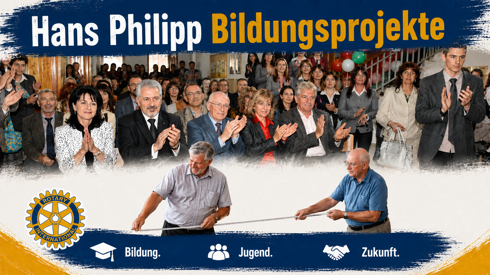
📊 FolieBulgarien – Hans Philipps Bildungsprojekt
🎙️ Anmoderation von Hans (Christoph) – mit Fakten„Seit 1994 trägt einer die Bildungsarbeit unseres Clubs maßgeblich: Hans Philipp. Die Zahlen dazu sind beeindruckend – rund 500 Lehrpersonen und über 5.000 Jugendliche wurden direkt erreicht, die Wirkung auf nachfolgende Generationen nicht abschätzbar. Etwa 2,5 Millionen Euro wurden investiert. Themen: Übungsfirma, Entrepreneurship, Start-up, Qualität des Unterrichts, Lehrbücher, RYLA-Seminare, Rotary Youth Award, Sommerhochschule für Lehrpersonen. Geographisch: zuerst Südosteuropa – Bulgarien, Rumänien, der Westbalkan – später auch Österreich. Partner: vor allem die Rotary Foundation, Distrikte aus Österreich, Bayern, Italien. In Bulgarien wird Hans bis heute liebevoll als ‚Vater der Übungsfirma' bezeichnet. Lieber Hans –"
📊 FolieLive-Video – Christoph kommt mit Mikro & Kameramann zu Hans Philipp, Leinwand zeigt das Live-Kamerabild. 🎥 Bildausschnitt: 2 Personen – Hans Philipp sitzend am Tisch, Christoph mit Mikro daneben.
Hans, welches eine Bildungsprojekt aus den ersten Jahrzehnten hat dich persönlich am meisten geprägt – und warum?
Wo sehen wir heute noch die Wirkung – und gibt es Menschen, zu denen du bis heute persönlich Verbindung hast? (Ehren-Adoptivtochter)
Warum bist du in Bulgarien unter die Tische gekrochen? (Maßband hochhalten)
Was hast du ohne Kleidung in Bulgarien gemacht? (Autoschlüssel-Anekdote)
🎬 Regie: Nach dem Gespräch mit Hans Philipp (unten) holt Christoph die nächsten beiden – Michael Rosendorfer und Judith Köck – gemeinsam mit Applaus auf die Bühne.
🎙️ Anmoderation von Michael (Christoph) – mit Fakten„Bildung heute – dafür steht Michael Rosendorfer. Michael hat in Kitzbühel Rotaract gegründet und damit die nächste Generation junger Rotarier auf die Bühne geholt. Gemeinsam mit Raimund Stanger, den wir später noch hören werden, hat er das Projekt „Grow In" aus der Taufe gehoben – ein Lehrlingsprojekt, das jungen Menschen in Lehre und Beruf den Rücken stärkt. Lieber Michael –"
Michael, warum habt ihr „Grow In" überhaupt gemacht – was war der Anlass, was hat euch da gepackt?
Und was hat „Grow In" bisher bewirkt – für die Lehrlinge, für die Betriebe, für die Region?
Judith KöckNow– Internationaler Dienst · Projekt „Kidera" (Uganda)
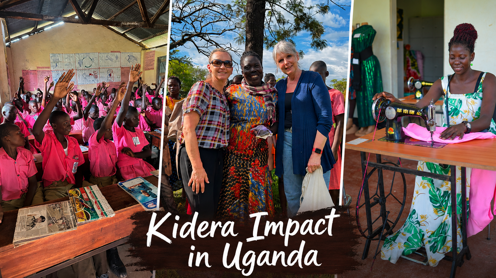
📊 FolieSchulprojekt „Kidera" (Uganda)
🎙️ Anmoderation von Judith (Christoph) – mit Fakten„Eine, die Bildung nicht aus der Distanz, sondern aus der Nähe denkt: Judith Köck. Judith ist die Projektleiterin unseres Schulprojekts „Kidera" in Uganda – und sie reist regelmäßig vor Ort, um zu sehen, was wirklich ankommt und wo der nächste Hebel anzusetzen ist. Liebe Judith –"
Judith, du bist immer wieder selbst in Uganda – was siehst du dort, was uns hier in Kitzbühel sonst nicht erreicht?
Was hat „Kidera" in den letzten Jahren konkret bewegt – und wer profitiert davon?
Axel NaglichThen & Now– Schulprojekt Madagaskar · Grußbotschaft per Video
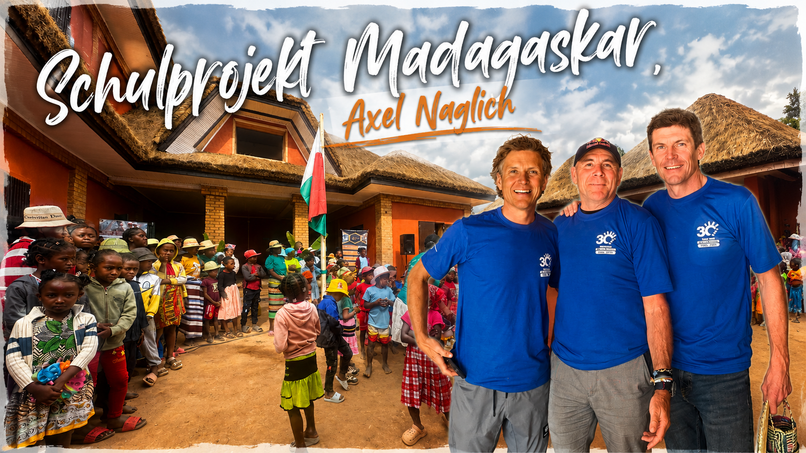
📊 FolieMadagaskar – Schulprojekt vor Ort
🎬 Anmoderation Grußbotschaft (Christoph)„Ein Bildungsprojekt führt uns heute noch ein Stück weiter – nach Madagaskar. Dort begleitet Axel Naglich ein Schulprojekt vor Ort. Axel kann heute nicht persönlich hier sein, aber er hat uns eine Grußbotschaft geschickt. Bitte einmal auf die Leinwand:"
📹 Video-Einspieler: Axels Grußbotschaft aus Madagaskar (Dauer ca. 1–2 Min.)
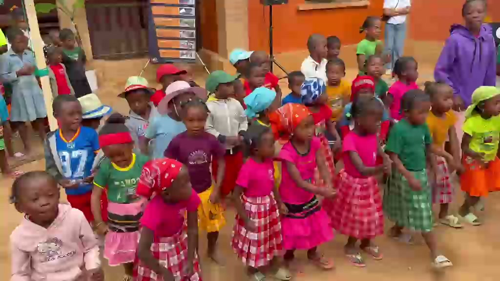
📊 FolieMadagaskar – Video-Einspieler (26 Sek.) – Kinder aus dem Schulprojekt singen/tanzen. Datei: Folien/Madagaskar_Schulprojekt_26sek.mp4
🎬 Video-Einspieler im Anschluss an Axels BotschaftDirekt nach Axels Grußbotschaft läuft ein 26-Sekunden-Video mit den Kindern aus dem Madagaskar-Schulprojekt (Chor/Tanz) – als visueller Beleg, was vor Ort passiert.
📹 Datei: Folien/Madagaskar_Schulprojekt_26sek.mp4 (Auszug aus dem WhatsApp-Video vom 20.05.2026)
🎙️ Abmoderation Grußbotschaft (Christoph)„Danke, lieber Axel – auf diesem Weg ganz herzlich zurück. Und damit haben wir in zehn Minuten gehört: Bildung von Bulgarien über Lehrlinge in Tirol bis nach Uganda und Madagaskar. Rotary in Bewegung."
🎬 Regie: Nach Axels Grußbotschaft moderiert ChristophMichael Rosendorfer und Judith Köck wieder von der Bühne.
Überleitung zu Exchange: „Von der Schulbank in die weite Welt – jetzt geht's um Begegnungen, die ein Leben prägen."
19:16 – 19:26
Projekt 2 – Exchange und Wirkung (10 Min.)
Einstieg (Moderator): „Ein Jahr in einer anderen Welt – was das mit Menschen macht, hören wir jetzt aus drei Perspektiven: einer Videobotschaft eines ehemaligen Austauschkindes, dem heutigen Exchange-Koordinator – und einem Gastvater von damals."
Martin JordanThen– ehem. Austauschkind · Videobotschaft (Start des Blocks)
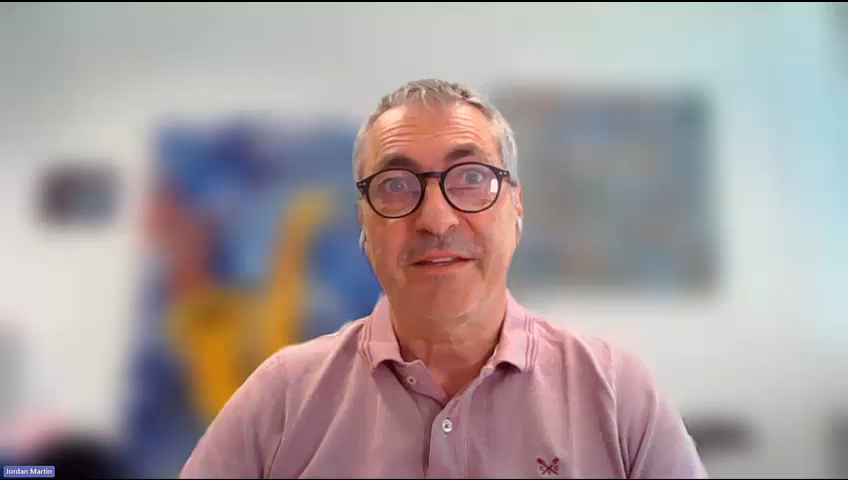
📊 FolieVideobotschaft von Martin Jordan – das Video läuft vollformatig auf der Leinwand, es ist die Folie für diesen Moment
🎬 Anmoderation Videobotschaft (Christoph)„Wir starten den Block mit einer Videobotschaft – von Martin Jordan, der selbst als Austauschkind ein Jahr in der Fremde war und uns aus seiner Perspektive grüßt. Bitte einmal auf die Leinwand:"
📹 Video-Einspieler: Martin Jordans Grußbotschaft (Dauer ca. 1–2 Min.)
📋 TODO: Video von Martin rechtzeitig einholen, Format/Auflösung mit Technik abstimmen.
🎙️ Abmoderation Videobotschaft (Christoph)„Danke, lieber Martin, auf diesem Weg – und jetzt zu jemandem, der den Exchange heute lebt:"
🎬 Regie: Nach Martin Jordans Grußbotschaft holt Christoph die anderen Gäste – Reini Pirchl und Hermann Denkmayr – auf die Bühne.
Reini PirchlNow– Exchange aktuell · bringt aktuelles Austauschkind Sophia mit (im Publikum)
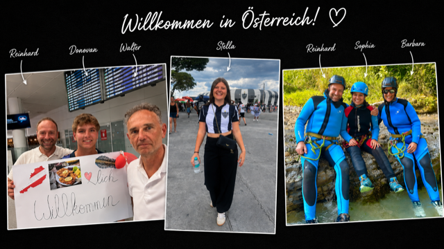
📊 Folie Willkommen in Österreich – Exchange-Programm (Reinhard, Donovan, Walter, Stella, Sophia, Barbara)
🎙️ Anmoderation (Christoph)„Was Exchange heute heißt, sieht man am besten an einem konkreten Beispiel. Reini Pirchl betreut aktuell unser Austauschkind Sophia – und Sophia ist heute Abend mit uns im Saal."
Reini, wer kommt heute zu uns nach Kitzbühel – und wer geht hinaus? Eine Zahl, ein Land, eine Geschichte.
Was hat sich in den letzten Jahren am Exchange-Programm verändert?
Erzähl uns kurz von Sophia – woher kommt sie, was nimmt sie mit?
📊 FolieLive-Video – Christoph mit Mikro & Kameramann zu Sophia ins Publikum, Leinwand zeigt das Live-Kamerabild. 🎥 Bildausschnitt: 2 Personen stehend – Sophia im Publikum, Christoph mit Mikro daneben.
🎤 Sophia im Publikum + Geschenk-ÜbergabeKurzfrage an Sophia – Kamera auf sie, Mikro kommt zu ihr:
„Sophia, in einem Satz: Was nimmst du aus deinem Jahr in Kitzbühel mit?"
🎁 Geschenk-Übergabe Set mit Rotary-Kleidung (Merchandise vom JAKO-Teamshop) – Übergabe durch Hedy:
1. an Sophia (Austauschkind)
2. an die beiden anwesenden Governors
Kurzer Applaus-Moment, Foto pro Übergabe.
Hermann DenkmayrThen– Austauschvater · hatte eine Schwedin zu Gast
Hermann, du hattest damals eine Schwedin bei euch zu Gast. Wie war das – plötzlich saß sie am Frühstückstisch? Kannst du überhaupt Schwedisch?
Und mal ehrlich: Warst du mit ihr in der Disco?
Überleitung zur Hauptspeise: „Begegnung verbindet – und das tut auch das nächste, was jetzt kommt: gemeinsam essen."
19:26 – 19:56
Hauptspeise (max. 30 Min.)
Rotaract-Band spielt dezent · keine Bühnenaktion
📊 FolieReel 1 (60-Jahre-Bilder) und Reel 2 (Präsidenten-Reel) laufen abwechselnd – dezent während des Essens, kein Sprecher, Wandschmuck-Charakter
🎙️ Übergang in die Hauptspeise (Christoph)„Vielen Dank an Reini, Martin und Hermann – Begegnung verbindet. Und jetzt verbindet uns das Gleiche, was Menschen seit jeher verbindet: ein gemeinsames Essen. Die Hauptspeise wird serviert. Mahlzeit – wir sehen uns in einer halben Stunde wieder."
🎙️ Wiedereinstieg nach der Hauptspeise (Christoph)„Ihr habt alle gut gegessen und seid nun satt. Jetzt geht es weiter."
19:56 – 19:58
Beitrag Peter Forstner(2 Min.)
Peter Forstner – ca. 2 Min.
📊 Folie60-Jahre-Logo + Motto „Geschichte, die wirkt."
🎙️ Anmoderation (Christoph)„Nun einer, dessen rotarische Wurzeln noch in die erste Hälfte der rotarischen Existenz des RC Kitzbühel zurückreichen. Distrikt-Schatzmeister Peter Forstner."
Einstieg: „Ohne Spenden keine Wirkung. Wir schauen auf eure Events – und darauf, was danach passiert."
🎬 Regie: Für Fundraising holt Christoph seine drei Gesprächspartner:innen – Moni Gredler, Anne Götzendorfer und Walter Endstrasser – gemeinsam auf die Bühne.
Moni GredlerNow– Konzerte im K3
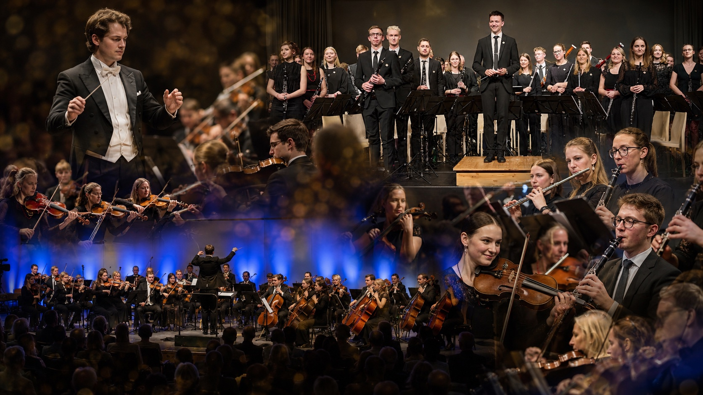
📊 FolieCollage mit beiden Konzerten
Moni, was waren eure erfolgreichsten Veranstaltungen?
Mit den Einnahmen konnten wir viel Gutes tun. Was hat dich am meisten berührt?
Anne GötzendorferNow– Christkindlmarkt
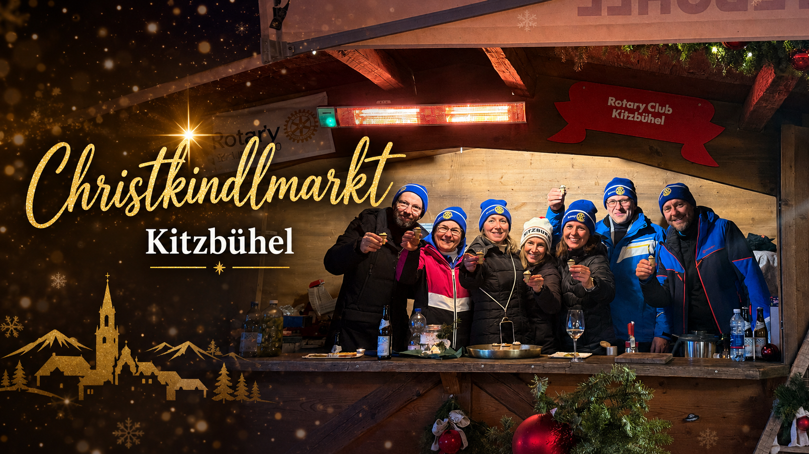
📊 FolieChristkindlmarkt
Anne, euer Christkindlmarkt ist mittlerweile Institution. Was ist der emotionalste Moment am Stand?
Walter EndstrasserThen– Pflastersteine & Gämsen · bringt beide Objekte zum Herzeigen mit auf die Bühne
🎁 Requisite – physisch auf die BühneWalter bringt einen Pflasterstein und eine Gämse zum Herzeigen mit auf die Bühne – Original-Objekte für die Kamera und das Publikum.
Walter, die Pflastersteine(in die Höhe halten) – erzähl uns kurz: Was ist die Idee dahinter, wer hat mitgemacht, was ist daraus geworden?
Und die Gämsen(Gämse zeigen): Wie ist diese Aktion entstanden – und was hat sie für den Club bzw. für die Region bedeutet? (Fakten aus Peter Höbarths Zwischenpräsentation: ca. 20.000 € Reinerlös, aufgeteilt auf Lebenshilfe und Sozialfonds.)
Raimund StangerNow– 🚲 Rikscha-Präsentation (letzter Punkt Fundraising)
📊 FolieLive-Video – Christoph geht mit Mikro & Kameramann zur Rikscha, Leinwand zeigt das Live-Kamerabild. 🎥 Bildausschnitt: Einfahrt der Rikscha von hinten in den Saal, dann Raimund in der Rikscha (+ Beifahrer:in), Christoph empfängt sie mit dem Mikro.
🚲 Rikscha-Präsentation: Raimund StangerRaimund fährt mit der Rikscha in den Saal ein – als finaler Fundraising-Moment. Die Rikscha wird nur präsentiert, nicht übergeben.
👤 Wer sitzt in der Rikscha?📋 TODO: Beifahrer:in festlegen
📋 TODO: Fahrweg im Saal, Stopp-Position, Aussteigen / Übergabe-Mikro klären. Mögliche Beifahrer:in: Ehrengast (z. B. Stadt-Vertretung Haidacher), Pflegeheim-Vertretung, oder Empfänger:in der Spende.
Raimund, was ist denn das hier?
20:06 – 20:16
Projekt 4 – Rotary Sport bewegt (10 Min.)
Einstieg: „Kitzbühel und Sport – das ist unsere DNA. Wir schauen auf fünf Formate, die Sport mit Wirkung verbinden – inkl. unserer Old & Young Wanderung mit dem Alpenverein."
🎬 Regie: Am Anfang des Blocks bittet ChristophRaimund Stanger und Günther Aigner auf die Bühne.
📊 FolieRotary Rad Fellowship Bildunterschrift: 2. bis 6. September
🎙️ Einleitung & Anmoderation (Christoph) – Then & Now Rad„Früher hat unser Club ganz gemütliche Radausflüge gemacht – heute sind wir bei den Rennradlern. Aus den Sonntags-Touren ist eine Rotary Rad-WM geworden. Wie das passiert ist, und wer dahintersteckt: Raimund Stanger und Günther Aigner."
Die Rotary Rad-WM – wie ist die Idee entstanden, wer kommt nach Kitzbühel, und was bedeutet das für unseren Club?
Was macht das Event als rotarisches Sport-Format einzigartig – und wo wirkt der Erlös?
AlpenvereinThen & Now– „Old & Young" Wanderung (gemeinsam mit Alpenverein) · mit Live-Kamera
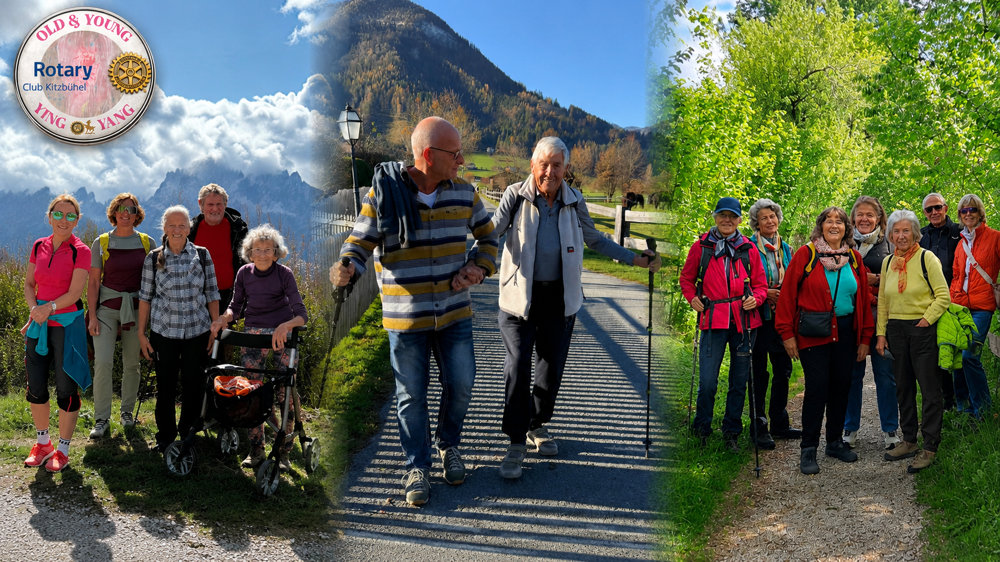
📊 FolieOld & Young Wanderung
📊 FolieLive-Video – Christoph mit Mikro & Kameramann zu den Alpenverein-Gesprächspartner:innen, Leinwand zeigt das Live-Kamerabild. 🎥 Bildausschnitt: Gruppe – Alpenverein-Vertreter:innen am Tisch + Christoph mit Mikro.
🎙️ Anmoderation (Christoph)„Sport heißt für uns auch: gemeinsam unterwegs sein, Generationen verbinden. Mit dem Alpenverein haben wir eine Old & Young Wanderung ins Leben gerufen – ein Format, das genau den Bogen ‚Then & Now' in Bewegung übersetzt."
📋 TODO: Ansprechpartner:innen vom Alpenverein für die Befragung vorab abstimmen (Name(n), Funktion, Kurzbio).
Wie ist die Old & Young Wanderung mit dem Alpenverein entstanden – wer hatte die Idee, und was war das Ziel?
Was passiert auf so einer Wanderung, das ihr in einem normalen Clubabend nicht erleben würdet – Generationen, Gespräche, Begegnungen?
Was nehmt ihr aus der gemeinsamen Arbeit mit dem Alpenverein mit – und wohin geht's mit dem Format als nächstes?
Benni Schorer & Gerhard ReschThen– zwei Stimmen aus den Anfangsjahren · Hedy setzt sich mit Stuhl & Mikrofon zwischen beide
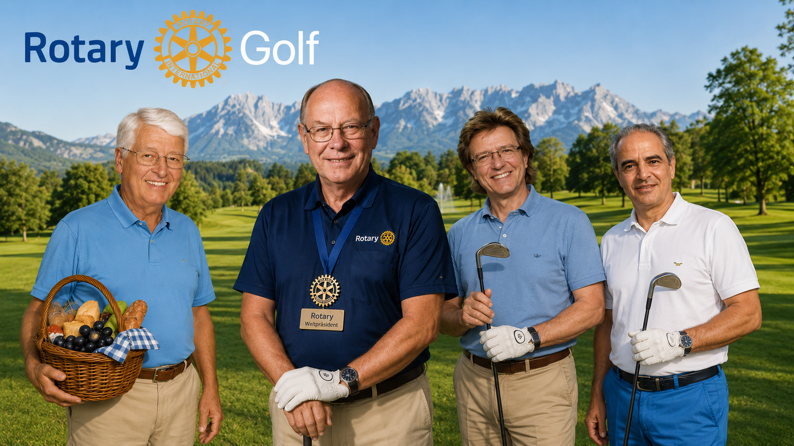
📊 FolieGolf-Freitag in Kitzbühel / Lunchpaket / Golfplatz
📊 FolieLive-Video – Hedy sitzt mit Mikro zwischen Benni und Gerhard, Leinwand zeigt das Live-Kamerabild. 🎥 Bildausschnitt: 3 Personen sitzend – Benni, Hedy, Gerhard nebeneinander im Publikum.
🎙️ Hedy setzt sich zwischen Benni & Gerhard – gemeinsamer PunktHedy nimmt einen Stuhl und ein Mikrofon, geht hinunter und setzt sich zwischen Benni Schorer und Gerhard Resch – beide sitzen nebeneinander im Publikum. Sie führt das Gespräch mit beiden gemeinsam.
„Zwei Stimmen aus unseren Anfangsjahren sitzen heute mitten unter uns – Benni Schorer und Gerhard Resch, ehemaliger Weltpräsident von Rotary Golf."
📹 Kameramann fängt alle drei ein – Benni, Hedy, Gerhard nebeneinander im Publikum, Live-Einblendung auf der Leinwand.
Frage an Benni: Warum hast du für die Rotarier jede zweite Woche ein Lunchpaket hergerichtet?
Frage an Gerhard: Weltpräsident Rotary Golf – wie kommt ein Mann aus Kitzbühel in dieses Amt, und was macht Rotary Golf weltweit aus?
20:16 – 20:19
Überraschungsmoment
Junko Philipp – Klavier
📊 Folie60-Jahre-Logo + Motto „Geschichte, die wirkt." (gleiche Folie wie bei Hedys Begrüßung)
20:19 – 20:31
Offizieller Abschluss & Ehrungen
Hedy Bendler & Walter Endstrasser · Münzen-Präsentation · Paul-Harris-Verleihung auf der Bühne · Verabschiedung
🪜 Geehrte langsam auf die Bühne bitten (Christoph / Hedy)Vor der Münzpräsentation werden die 4 Paul-Harris-Empfänger einzeln namentlich – jeweils mit Begleitperson – in ruhigem Tempo auf die Bühne gebeten. Sie nehmen seitlich Aufstellung und bleiben dort während der Münzpräsentation.
📋 TODO: Reihenfolge der Aufrufe + Stehposition auf der Bühne vorab abstimmen.
🎙️ Anmoderation Münzen-Vorstellung (Christoph)„Jetzt gibt es noch was ganz Unvergessliches. Lieber Reini, was hast du uns denn mitgebracht?"
📊 FolieLive-Video – Kameramann fängt Münzen-Premiere und Übergabe ein: Low-Angle auf die Münze, dann Schwenk zur Übergabe am Tisch. 🎥 Bildausschnitt: Detail Münze (Low-Angle), dann 2 Personen stehend – Hedy übergibt die Münze am Tisch.
🪙 Münzen-Premiere & symbolische Übergabe – mit Kamera1. Reini Pirchl stellt die Münze von der Bühne vor – Idee, Motiv, Prägung, Anzahl (200 Stk Silbermünzen mit 60-Jahre-Motto / Altes & Neues Logo).
2. Symbolische Übergabe durch die Präsidentin: Hedy Bendler nimmt eine Münze von der Bühne, geht hinunter zu 📋 TODO: Empfänger:in klären an den Tisch und überreicht sie dort.
3. Die restlichen Münzen liegen an den Tischen / werden an Ehrengäste verteilt.
4. Anne Götzendorfer wartet an einem Stehtisch mit den Münzen auf Interessenten – wer sich in der Liste als Käufer:in einträgt, kann die Münze gleich mitnehmen.
📹 Kameramann ist dabei – Low-Angle auf die Münze bei Reinis Vorstellung, dann Schwenk zur Übergabe am Tisch. Live-Einblendung auf der Leinwand.
⚠️ Ursprünglich war die symbolische Übergabe an Günther Much geplant – er kommt nicht. Empfänger:in muss neu festgelegt werden.
🎙️ Übergabe (Christoph → Hedy & Walter)„Jetzt wollen wir noch einen ersten Paul Harris an verdiente Mitglieder übergeben. Hedy und Walter, bitte sehr."
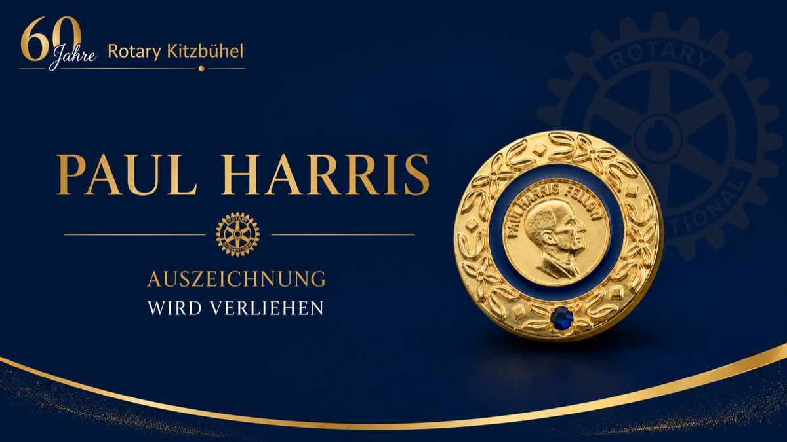
📊 FoliePaul Harris einblenden
🏅 Paul-Harris-Verleihung auf der Bühne (Hedy & Walter)Die 4 Paul Harris Fellow Auszeichnungen werden an die bereits auf der Bühne stehenden Geehrten (mit Begleitperson) übergeben. Pro Person:
1. Walter erklärt, WARUM diese Person die Auszeichnung erhält – Verdienste, Projekte, persönlicher Beitrag (2–3 Sätze).
2. Hedy überreicht Paul-Harris-Nadel und Urkunde auf der Bühne.
3. Foto, kurzer Applaus.
📷 Keine Live-Kamera – nur professionelles Foto pro Person.
📋 TODO: Namen der 4 Ausgezeichneten + jeweilige Begleitperson + Walters Begründungstexte (2–3 Sätze pro Person) vorab abstimmen und hier ergänzen.
🎙️ Verabschiedung & Aufruf zum Kuchen (Hedy)„Vielen Dank, dass ihr dabei wart, wie wir unseren 60er gefeiert haben. Ich gehe jetzt Kuchen anschneiden. Da hinten. Alle Präsidenten kommen bitte mit dazu. Dankeschön."
📊 FolieLive-Video – Kameramann fängt Kuchen-Anschnitt und „Happy Birthday" live ein, Leinwand zeigt das Live-Kamerabild. 🎥 Bildausschnitt: Gruppe stehend – alle Präsident:innen, Governor und Rotaracter:innen gemeinsam beim Anschnitt am Kuchen.
🎂 Kuchen-Anschnitt mit „Happy Birthday" – gemeinsam & mit KameraNach der Verabschiedung kommen alle Präsidentinnen und Präsidenten, der Governor und die Rotaracter:innen zusammen auf die Bühne (oder zur Kuchen-Station) und schneiden gemeinsam den 60-Jahre-Jubiläumskuchen an.
🎶 Der ganze Saal singt „Happy Birthday" – musikalische Begleitung durch Junko Philipp oder die Rotaract-Band.
Sinnbildlich: Generationen vereint, Clubs vereint, Old & Young – Then & Now.
📹 Kameramann fängt den gemeinsamen Anschnitt und das Singen live ein – Live-Einblendung auf der Leinwand, Gruppenfoto.
📋 TODO: Kuchen rechtzeitig bereitstellen, Messer/Schaufel organisieren, Position vorab abstimmen. Klären, ob Junko oder Band einsetzt.
ab 20:31
Nachspeisenbuffet & Ausklang „Old & Young"
Rotaract-Band · Musikalischer Ausklang (dezent)
📊 FolieReel 1 läuft erneut im Loop – 60 Jahre Bilder als Wandschmuck